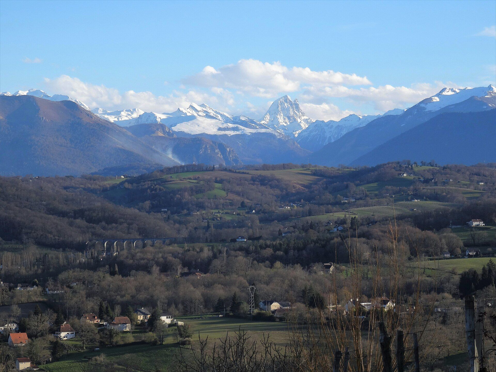

Galerie
Photographies, cartes postales et documents, classés par lieu et par événement.
Photos classées
Cliquez sur une image pour l’agrandir
Les images viennent des fiches de l’association et de Wikimedia Commons. Les crédits s’affichent sous chaque photo agrandie.
Lieu Les Bains du Broca
Lieu La bastide et ses monuments
Lieu La maison d’Andoins et le château de Marca
Lieu Lieux disparus ou transformés
Événement La Cavalcade de Gan (1946-1999)
Événement Le Gan-Olympique
Exposition Les expositions photographiques
Photos à ajouter. Chaque année depuis 2010, l’association présente une exposition (« La neige à Gan », « Les lumières de Gan », « La vie quotidienne à Gan »…). Les clichés exposés pourront être rassemblés ici, exposition par exposition, avec l’accord de leurs auteurs. [Texte d’attente à modifier]